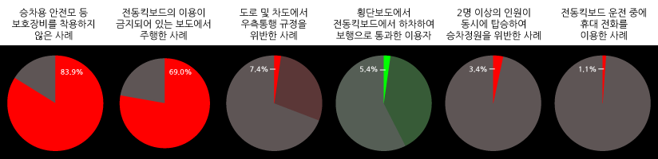

지난 5월 12일, 서울 강남의 도로 한복판에서 전동킥보드를 타던 20대 남성 두 명이 차량에 치여 사망하는 사고가 발생했다. 작년 10월 29일에는 헬멧 없이 전동킥보드를 타던 17살 고교생이 전신주를 들이받고 사망하는 사고가 발생했으며, 2020년 4월 12일 부산에서는 공유 전동 킥보드를 타고 횡단보도를 건너던 남성이 차량과 충돌해 사망하는 사고가 발생하기도 했다. 서울시에 따르면 2018년 150대 수준에 불과하였던 공유 전동 킥보드는 2020년 약 35,850대로 급증하였으며, 2021년 6월 기준 서울 내 14개 전동킥보드 대여사업자가 총 55,499대의 공유 전동킥보드를 운용하고 있다고 한다. 그러나 이런 전동킥보드 사용량이 증가할수록, 전동킥보드 사고로 인해 부상을 입거나 심지어 사망하는 사고가 증가하고 있다. 이런 부상 및 사망사고를 줄이기 위해서 우리는 어떻게 해야 할까?
TAAS 교통사고분석시스템에 따르면 전동킥보드를 포함한 개인형 이동장치(PM) 사고는 2017년에 117건, 2018년에 225건, 2019년에 447건, 2020년에 873건에 달했다. 개인형 이동장치 사고로 인한 사망자는 2017년에 4명, 2018년에 4명, 2019년에 8명, 2020년에 10명으로 집계되었으며, 개인형 이동장치 사고로 인한 부상자는 2017년에 124명, 2018년에 238명, 2019년에 473명, 2020년에 985명으로 집계되었다. 이처럼 전동킥보드 사고와 그로인한 사망자 및 부상자 수는 2017년부터 꾸준한 증가치를 보였으며 앞으로도 더 늘어날 전망이다.
한국소비자원에서 시행한 전동킥보드 공유서비스 안전실태조사에 따르면 2018년부터 2021년 상반기까지 전동킥보드 관련 위해사례는 총 1,708건이 접수되었으며, 그중 1,328건(77.8%)이 미끄러짐, 넘어짐, 부딪힘 등 주행 사고로 인한 위해 사례로 접수가 되었다. 그리고 전체 사례중 신체 상해가 확인된 사례는 1458건으로, 그 중 머리 및 얼굴 부위가 756(51.9%)로 가장 많았고, 이 중 뇌진탕 등 심각한 부상으로 연결될 수 있는 부위에 위해를 입은 사례가 157건(10.8%)에 달했다. 해당 사례에서 확인된 위해증상은 열상(찢어짐)이 452건(31.0%)으로 가장 많았고, 354건의 골절상(24.3%), 210건의 타박상(14.4%)이 그 뒤를 이었다.
한국소비자원에서는 서울 지역 공유 전동킥보드가 가장 밀집된 구역 10곳(서초구 교대역, 마포구 홍대입구역, 서대문구 신촌역 등)을 선정하여 2021년 5월 14일부터 6월 4일까지 해당 구역 내 전동킥보드 이용 사례를 조사했다. 해당 지역 10개소에서 총 87건의 전동킥보드 이용 사례가 확인되었지만, 이중 73건(83.9%)은 승차용 안전모 등 보호장비를 착용하지 않았다. 그리고 전체 이용 사례 중 60건(69.0%)은 전동킥보드의 이용이 금지되어 있는 보도에서 주행하고 있었으며, 전동킥보드의 이용이 허용된 자전거 도로나 차도에서 주행한 경우 27건중 2건(7.4%)은 도로 중앙선을 기준으로 좌측 부분에서 주행하여 우측통행 규정을 위반하였다. 그 외에도 전동킥보드를 이용 중 횡단보도를 이용한 사례 37건 중 전동킥보드에서 하차하여 보행으로 통과한 이용자는 단 2건(5.4%)에 불과하였고, 전체 이용 사례 중 3건(3.4%)은 2명 이상의 인원이 동시에 탑승한 상태로 주행하여 승차정원(1명)을 초과하였다. 심지어 전동킥보드 운전 중 휴대전화를 사용 하는 1(1.1%)건의 사례도 있었다.
전동킥보드 운전자는 도로를 운전할 때 승차용 안전모를 착용해야 한다. 안전모 외에도 부상 방지를 위해 장갑 및 손목보호대, 무릎, 및 팔꿈치 보호대 등의 안전보호장구를 착용하고 전동킥보드 등을 운전하는 것이 좋다. 또한 전동킥보드 운전자는 자전거만 통행할 수 있도록 설치된 전용차로를 포함한 자전거도로에서 통행해야 한다. 전동킥보드 운전자가 횡단보도를 이용하여 도로를 횡단할 때에는 전동킥보드에서 내려서 전동킥보드를 끌거나 들고 보행해야 한다. 전동킥보드 운전자는 운전자를 포함한 1명의 승차정원을 초과하여 동승자를 태우고 운전하면 안되며, 만약 이를 어긴 사람에게는 4만원의 범칙금이 부과된다. 전동킥보드 운전자는 운전 중에는 휴대용 전화를 사용하면 안 되며, 이를 위반할 시 2만원의 범칙금이 부과된다.
지금까지 안전모 착용, 자전거도로 통행, 횡단보도에서 탑승 금지, 동승자 탑승 금지, 운전중 휴대전화 사용 금지 등의 규칙을 알아보았다. 어찌보면 누구나 아는 당연하고 간단한 규칙이지만, 그런 당연하고 간단할 규칙일수록 잘 지켜야 되는 법이다.